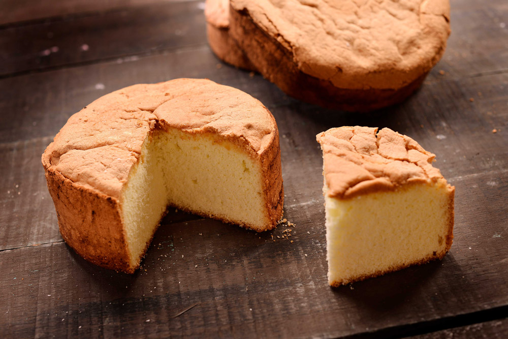
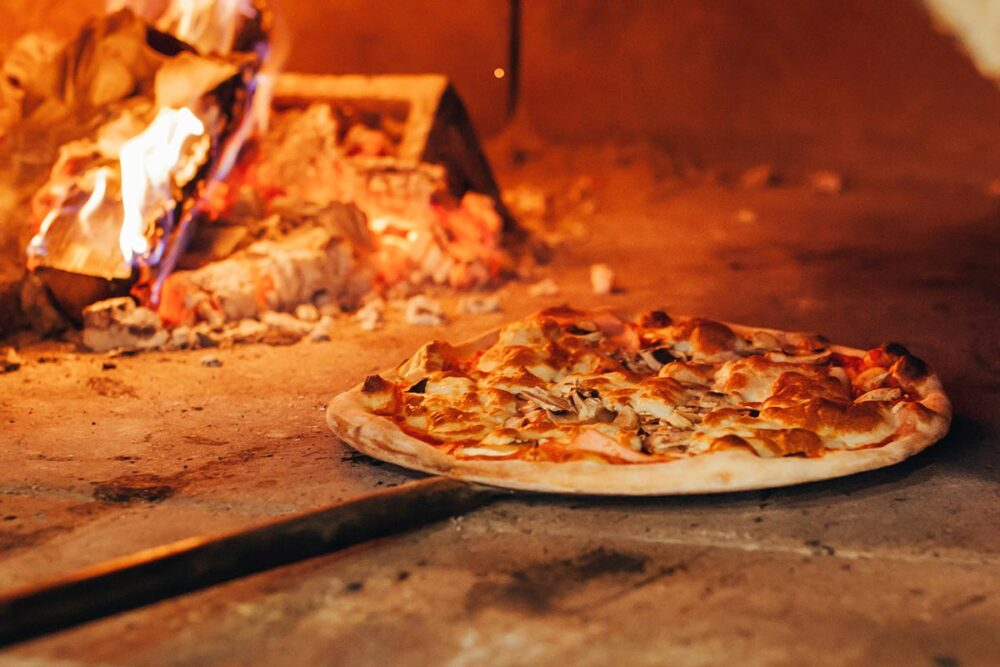
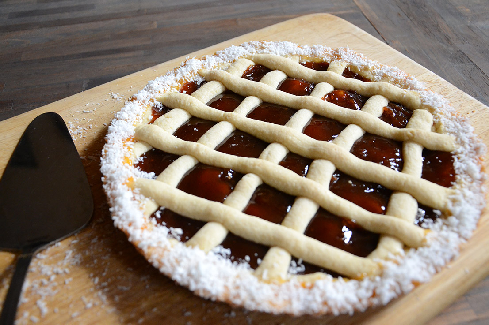

Mezclar en la amasadora la Premezcla, la sal, el azúcar y la levadura.
Agregar los huevos, el aceite y la leche tibia.
Batir por 3 minutos hasta que quede una masa suave y cremosa.
Aceitar una budinera de 25 cm. de largo y volcar la masa.
Tapar con lienzo. Dejar levar en ambiente cálido por 40 minutos o hasta que duplique su volumen.
Cocinar en horno por 40 minutos.
Desmoldar y dejar enfriar sobre rejilla
Pan de molde Sin Tacc

Ingredientes
Cantidades
Ingredientes
5 unidades
Huevo
200 gramos
Azucar
1 cucharadita
Huevo
200 gramos
Premezcla
Procedimiento
Prender el horno a 170 grados de temperatura.
Engrasar un molde circular de 24 cm. de diámetro. Espolvorear con premezcla.
Batir los huevos con el azúcar y la esencia de vainilla hasta que quede una preparación clara y espumosa (punto letra)
Agregar la PREMEZCLA SANTA MARIA tamizada mezclando con movimientos envolventes (utilizar espátula de goma o batidor de mano).
Volcar la preparación en el molde.
Cocinar por 60 minutos.
Retirar del horno y dejar reposar 10 minutos antes de desmoldar
Pizza Sin Tacc

Ingredientes
Cantidades
Ingredientes
280 gramos
Premezcla
35 gramos
Levadura fresca
20 gramos
Azucar
6 gramos
Sal
1 cucharadita
Aceite de oliva o neutro
240 cm3
Agua tibia
200 cm3
Salsa para Pizza
250 gramos
Muzzarella
a gusto
Oregano
Opcional
Aceitunas Verdes
Procedimiento
Encender el horno a 200 grados de temperatura
Mezclar en la amasadora o procesadora la PREMEZCLA SANTA MARIA, el azúcar, la sal y la levadura fresca.
Agregar el aceite y el agua tibia
Batir por 3 minutos hasta que se forme una masa lisa y cremosa.
Aceitar una pizzera de 30 cm. de diámetro.
Volcar la masa en el centro. Utilizar una cuchara mojada en agua para extender la masa sobre la pizzera. Dejar levar hasta que duplique su volumen.
Cocinar en la parte inferior de horno por 15 minutos para que dore la base.
Retirar del horno, cubrir con salsa y muzzarella. Llevar nuevamente al horno en la rejilla del medio y cocinar por 10 minutos más.
Retirar de horno, agregar las aceitunas y el orégano. Esperar 2 minutos para cortarla.
Pasta Flora

Ingredientes
Cantidades
Ingredientes
200 gramos
Premezcla
1/2 cucharadita
Polvo Leudante
50 gramos
Azucar
100 gramos
Manteca
1 unidad
Huevo
1/2 cucharadita
Escencia de Vainilla
600 gramos
Membrillo
1 unidad
Yema para pintar
Procedimiento
Mezclar la premezcla con el polvo de hornear y el azúcar.
Agregar la manteca fría cortada en cubos. Procesar hasta formar una arenilla.
Mezclar el huevo con la esencia de vainilla y agregar. Procesar hasta formar una masa tierna.
Descansar en la heladera por 30 minutos
Espolvorear la mesada con premezcla y estirar ¾ de la masa utilizando un palo de amasar.
Volcar la masa en el molde de tarta de 24 cm. de diámetro y acomodarla para luego poder rellenar con el membrillo.
Colocar el membrillo en un bol, agregarle 3 cucharadas de agua (puede ser más cantidad dependiendo de la consistencia del dulce). Con la ayuda de un tenedor pisarlo hasta que quede cremoso.
Cubrir la masa extendiendo el dulce en forma pareja.
Espolvoreamos la mesada con premezcla y extendemos el ¼ de masa reservado
Cortamos tiras de 1 cm. de ancho y luego las vamos a colocar sobre el dulce formando un enrejado.